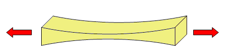
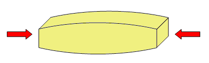
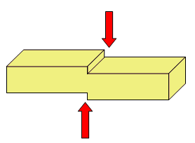

Esfuerzos¶
Las estructuras están destinadas a soportar cargas externas sin deformarse ni romperse. Como resultado de estas cargas externas las estructuras soportan fuerzas internas llamadas esfuerzos.
Cargas y esfuerzos¶
- Carga
- Es una fuerza externa que actúa sobre una estructura. Puede ser un peso, un empuje, una dilatación térmica, etc.
- Esfuerzo
- Tensión o fuerza interna que soporta una estructura como resultado de las cargas externas.
Por ejemplo, una persona sentada en una silla es una carga para la silla. Debido a esta carga las patas soportan un esfuerzo de compresión.
Hay 5 esfuerzos distintos. A continuación se explica cada uno.
Tracción¶
El esfuerzo de tracción tiende a estirar la estructura:
{kind=link}
Ejemplos de elementos que soportan este esfuerzo son:
- Cadenas de un columpio
- Cable de una grúa
Compresión¶
El esfuerzo de compresión tiende a comprimir la estructura:
{kind=link}
Ejemplos de elementos que soportan este esfuerzo son:
- Patas de una silla
- Columnas de un edificio
Flexión¶
El esfuerzo de flexión tiende a doblar la estructura:

Ejemplos de elementos que soportan este esfuerzo son:
- Tablero de una silla
- Suelos de edificios
- Brazo de una grúa
Torsión¶
El esfuerzo de torsión tiende a retorcer la estructura:

Ejemplos de elementos que soportan este esfuerzo son:
- Eje de un destornillador
- Llave al girar
- Eje de un grifo
Corte o cizalla¶
El esfuerzo de corte o esfuerzo de cizalla tiende a cortar en dos la estructura:
{kind=link}
Ejemplos de elementos que soportan este esfuerzo son:
- Papel cortado con tijeras
- Tornillo que soporta un cuadro
Ejercicios¶
Busca dos ejemplos de esfuerzos de tracción que no estén en esta página.
Busca dos ejemplos de esfuerzos de compresión que no estén en esta página.
Busca dos ejemplos de esfuerzos de flexión que no estén en esta página.
Busca dos ejemplos de esfuerzos de torsión que no estén en esta página.
Busca dos ejemplos de esfuerzos de cizalla o cortadura que no estén en esta página.
Dibuja y nombra los esfuerzos que aparecen en un columpio cuando se sube un niño sobre el asiento.

Analiza los esfuerzos que aparecen en una mesa cuando se coloca un peso encima de ella.
Analiza los esfuerzos que aparecen en una grúa cuando levanta una carga.
{kind=link}